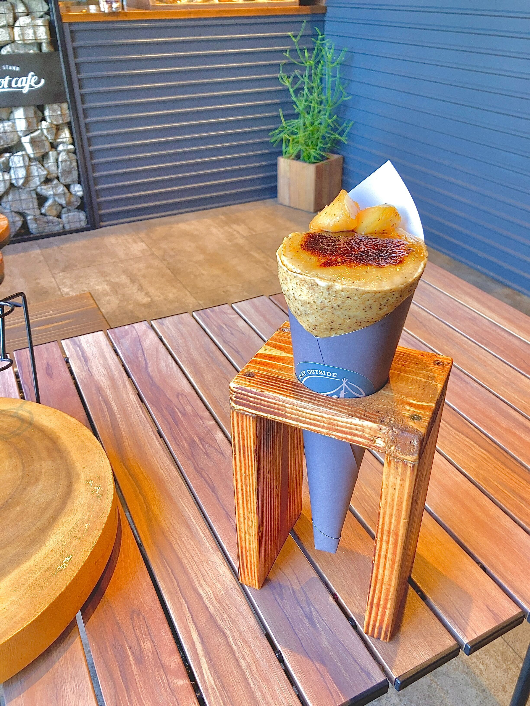
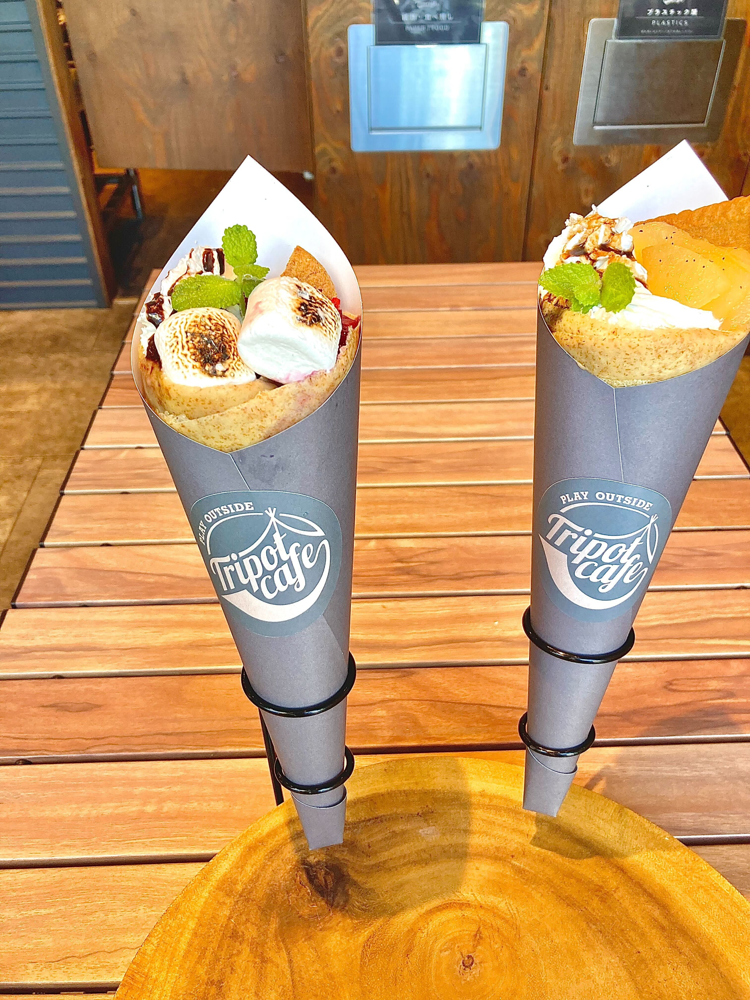
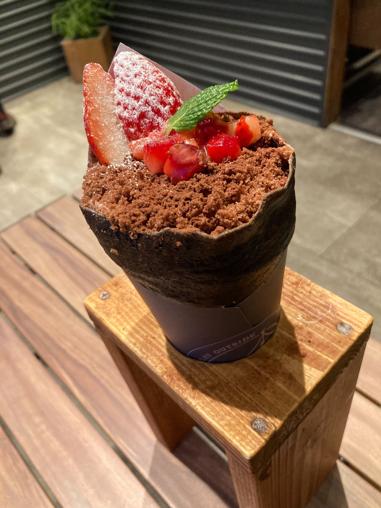

Tripot cafe BAKE standまとめ
フードトラック「Tripot cafe」が始まりで、クレープをメインに販売していました。その実店舗として、Tripot cafe BAKE stand Anjoがオープンしました。アウトドアがコンセプトのテイクアウト専門店となっています。
桃ブリュレクレープ

Tripot cafe BAKE standのクレープはどれも生地がもちもちしていて芳ばしくておいしいです。ブリュレと桃との相性が抜群で、クレープの中にある紅茶カスタードの香りがよかったです。純正クリーム、桃の果実などがたっぷり入っていて、食べ応えがありました。
ベリースモア

熱せされて、こんがりトロトロとしたマシュマロとクラッカーで作られたスモアを大胆にクレープにしていて、新鮮なおいしい味でした。一緒に乗っているベリーと食べると、さらにおいしさ倍増です。
ストロベリーショコラケーキ

濃厚なチョコレートと生クリームでのこってりとした美味しさです。さっぱりとしたいちごと一緒に食べることもおすすめです。
アクセスマップ
営業時間;11:00~21:00
定休日;不定休
[電車でお越しの方]
名古屋鉄道 名古屋本線・西尾線「新安城駅」南口徒歩1分